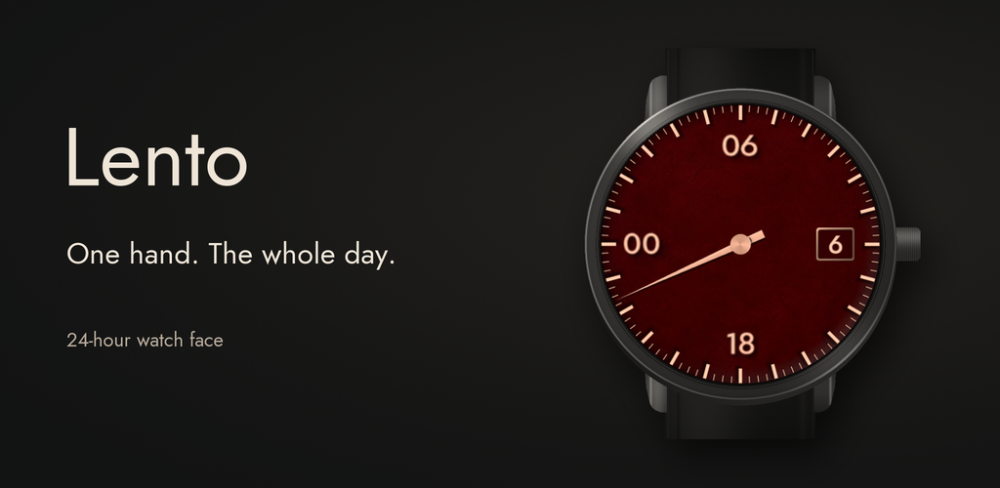
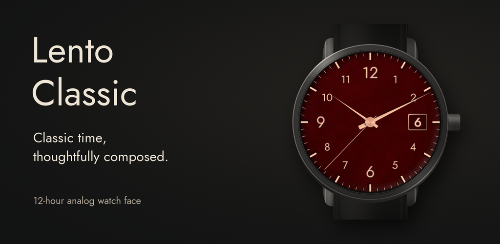

24-HOUR WATCH FACE
Lento

A single-hand watch face for Wear OS that shows the whole day on one dial.
Read Lento's privacy policyApp supportmark.om.4383+lento@gmail.com
INFORMATION, WITHOUT THE EXTRA NOISE
Public documentation for watch faces by Marko Marić, publishing as mark.om.
Explore the designs, learn about voluntary testing, read an app's privacy policy or contact the developer. This is an information and support site, with no checkout.
24-HOUR WATCH FACE

A single-hand watch face for Wear OS that shows the whole day on one dial.
Read Lento's privacy policyApp supportmark.om.4383+lento@gmail.com
12-HOUR WATCH FACE

An analog watch face for Wear OS with hour, minute and seconds hands.
Read Lento Classic's privacy policyApp supportmark.om.4383+lento-classic@gmail.com
We are preparing voluntary closed tests for Lento and Lento Classic. Compatible-watch owners can learn about the planned Google Group request process, free access for accepted participants and private, honest feedback.
Use the official signup links shared by the developer once setup is ready. Read the testing information and privacy notice before requesting access.
No compatible watch? You are welcome to read this page and forward the developer's official invitation when available. You do not need to join the group or register as a tester to help someone find it.
Email the address for your app. A description of the issue, your watch model and your Wear OS version can help. Share only information needed to explain the problem.
Please do not send passwords, authentication codes, full payment details or unnecessary sensitive information. You do not need to contact support to use either watch face.
The app privacy policies also explain support email handling and the hosting of this website. This site has no checkout, account sign-in or contact form.